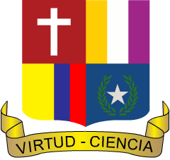

Calendario Académico 2025
Colegio María Auxiliadora de Cartago
< Anterior
Siguiente >
Leyenda
Día Festivo
Desarrollo Institucional
Receso Estudiantil
Evento Institucional (General)
PESCC / Democracia / PRAES
Semana de Simulacro
Reuniones / Escuela de Padres
Act. Especial / Conmemoración
Comités / Consejos / Inducción
Info Periodo / Entregas
Eventos ASPE
Primer Periodo
Segundo Periodo
Tercer Periodo
Cuarto Periodo
Eventos Generales y Observaciones
Creado por: Profesor Néstor Fabio Montoya Palacios
×